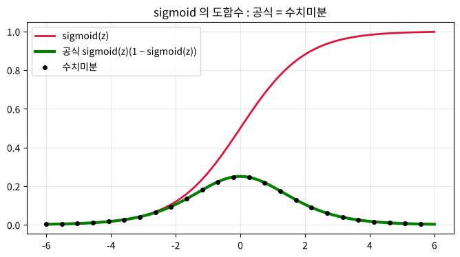

제 12 편
오차역전파 (1) - 연쇄법칙으로 한꺼번에 미분하기#
근거 자료: 박성호, 「오차역전파 (I) 개념 • 동작원리 • 시그모이드 함수 미분」, 「오차역전파 (II) 출력층 오차역전파 공식」 (ML_LEC_23, 24)
학습 목표#
수치미분의 문제점과 오차역전파의 아이디어(연쇄법칙으로 국소 미분 분리)를 설명할 수 있다.
sigmoid 함수의 도함수 \(\mathrm{sigmoid}(z) \times (1 - \mathrm{sigmoid}(z))\) 를 유도할 수 있다.
출력층 가중치와 바이어스의 오차역전파 공식을 유도하고, 수치미분 결과와 같음을 확인할 수 있다.
지난 시간 복습#
제 11편: 784 - 100 - 10 신경망을 수치미분으로 학습시키면 사진 1장에 몇 초, 30,000장이면 수십 시간 이 걸렸습니다.
제 1편: 합성함수의 미분 = 연쇄법칙(chain rule), \(\displaystyle \frac{df}{dx} = \frac{df}{dt} \times \frac{dt}{dx}\)
핵심 정리#
① 뉴런 하나의 연쇄법칙
\(z = wx + b\), \(a = \mathrm{sigmoid}(z)\), \(\displaystyle E = \frac{1}{2}(t - a)^{2}\) 이면
\(\displaystyle \frac{\partial E}{\partial w} = \frac{\partial E}{\partial a} \times \frac{\partial a}{\partial z} \times \frac{\partial z}{\partial w} = (a - t) \times a(1 - a) \times x\)
예) \(x = 1, w = 0.5, b = 0, t = 1\) : \(z = 0.5, a \fallingdotseq 0.6225\) → \(\displaystyle \frac{\partial E}{\partial w} \fallingdotseq (-0.3775) \times 0.2350 \times 1 \fallingdotseq -0.0887\) (수치미분과 같다) (아래 애니메이션 1)
② sigmoid 의 도함수
\(\mathrm{sigmoid}(z) = (1 + e^{-z})^{-1}\) 을 연쇄법칙으로 미분하면
\(\displaystyle \mathrm{sigmoid}'(z) = \frac{e^{-z}}{(1 + e^{-z})^{2}} = \frac{1}{1 + e^{-z}} \times \frac{e^{-z}}{1 + e^{-z}} = \mathrm{sigmoid}(z) \times \{1 - \mathrm{sigmoid}(z)\}\)
\(\mathrm{sigmoid}'(z) = a(1 - a)\) (최댓값 \(\displaystyle \mathrm{sigmoid}'(0) = \frac{1}{4}\))
③ 출력층 공식
출력 노드 1 의 가중치 \(w_{11}^{(3)}\) 은 \(E_{1}\) 에만 영향을 주므로
\(\displaystyle \frac{\partial E}{\partial w_{11}^{(3)}} = (a_{1}^{(3)} - t_{1}) \times a_{1}^{(3)}(1 - a_{1}^{(3)}) \times a_{1}^{(2)}\) (아래 애니메이션 2)
앞의 두 곱을 출력층 손실이라 하고 행렬로 모으면
\(\mathrm{loss}_{3} = (A_{3} - T) \times A_{3} \times (1 - A_{3})\) (같은 자리끼리 곱)
\(\displaystyle \frac{\partial E}{\partial W^{(3)}} = A_{2}^{T} \cdot \mathrm{loss}_{3}\), \(\displaystyle \frac{\partial E}{\partial b^{(3)}} = \mathrm{loss}_{3}\)
코드로 직접 해 보려면 : 페이지 위쪽 로켓 버튼 → Colab 을 누르세요. 값을 바꿔 가며 실행하고, 연습 문제의 정답도 코랩에서 확인합니다. 처음 열면 파일 → Drive에 사본 저장 부터 하세요.
개념 다지기 1. 오차역전파의 아이디어#
가중치 \(W^{(2)}\) 가 변하면 최종 오차 \(E\) 가 얼마나 변하는지\(\displaystyle \left(\frac{\partial E}{\partial W^{(2)}}\right)\) 알아야 경사하강법을 할 수 있습니다.
입력 → [W(2)] → A(2) → [W(3)] → A(3) → 오차 E
\(W^{(2)}\) 는 \(E\) 에 직접 영향을 주지 않고, \(A^{(2)}\) → \(A^{(3)}\) → \(E\) 를 거쳐서 영향을 줍니다. 연쇄법칙으로 쪼개면
\(\displaystyle \frac{\partial E}{\partial W^{(2)}} = \left( \frac{\partial E}{\partial A^{(3)}} \right) \times \left( \frac{\partial A^{(3)}}{\partial A^{(2)}} \right) \times \left( \frac{\partial A^{(2)}}{\partial W^{(2)}} \right)\) ① ② ③
①, ②, ③ 처럼 이웃한 것끼리의 작은 미분을 국소(local) 미분 이라고 합니다.
국소 미분을 수학 공식 으로 미리 구해 두고, 출력층(①)부터 거꾸로(②, ③) 곱해 나가며 계산하는 방법이 오차역전파 (Back Propagation) 입니다.
값을 하나씩 움직여 보는 수치미분과 달리 행렬 공식으로 한 번에 계산하므로 아주 빠릅니다.
개념 다지기 2. 가장 작은 예 - 뉴런 1개#
입력 \(x\) 하나, 가중치 \(w\), 바이어스 \(b\), 정답 \(t\) 인 뉴런 1개를 생각합니다. 손실함수는 계산을 깔끔하게 하려고 \(\displaystyle E = \frac{1}{2} (t - a)^{2}\) 을 씁니다.
w ──┐
x ──┼─→ z = wx + b ─→ a = sigmoid(z) ─→ E = ½(t − a)²
b ──┘
연쇄법칙: \(\displaystyle \frac{\partial E}{\partial w} = \frac{\partial E}{\partial a} \times \frac{\partial a}{\partial z} \times \frac{\partial z}{\partial w}\)
국소 미분 |
공식 |
\(x = 1, w = 0.5, b = 0, t = 1\) 일 때 |
|---|---|---|
\(\displaystyle \frac{\partial E}{\partial a}\) |
\(-(t - a) = a - t\) |
\(0.6225 - 1 =\) ( ) |
\(\displaystyle \frac{\partial a}{\partial z}\) |
\(a(1 - a) \leftarrow\) 아래 개념 3 |
\(0.6225 \times 0.3775 =\) ( ) |
\(\displaystyle \frac{\partial z}{\partial w}\) |
\(x\) |
( ) |
\(\displaystyle \frac{\partial E}{\partial w}\) |
\((a - t) \times a(1 - a) \times x\) |
( ) |
\((z = 0.5 \times 1 + 0 = 0.5, a = \mathrm{sigmoid}(0.5) \fallingdotseq 0.6225)\)
[확인 1] 오차역전파 결과와 수치미분 결과가 ( 같다 / 다르다 ). \(\displaystyle \frac{\partial E}{\partial w}\) 가 음수이므로 경사하강법 \(\displaystyle w \leftarrow w - \alpha \times \frac{\partial E}{\partial w}\) 에서 \(w\) 는 ( 커진다 / 작아진다 ). 그러면 \(a\) 는 정답 1 에 ( 가까워진다 / 멀어진다 ).
애니메이션 1. 앞으로 계산(순전파), 뒤로 미분(역전파)#
위쪽 값은 순전파 로 왼쪽 → 오른쪽 계산된 값, 아래쪽 빨간 값은 역전파 로 오른쪽 → 왼쪽 곱해져 오는 미분값입니다.
개념 다지기 3. sigmoid 함수의 미분 ⭐#
\(\displaystyle \mathrm{sigmoid}(z) = \frac{1}{1 + e^{-z}} = (1 + e^{-z})^{-1}\)
① 연쇄법칙: \(\displaystyle \frac{d}{dz} (1 + e^{-z})^{-1} = -(1 + e^{-z})^{-2} \times\) ( ) \(\displaystyle = \frac{e^{-z}}{(1 + e^{-z})^{2}}\)
② 분모 분리: \(\displaystyle = \frac{1}{1 + e^{-z}} \times \frac{e^{-z}}{1 + e^{-z}}\)
③ 분자에 \(+1 - 1\): \(\displaystyle \frac{e^{-z}}{1 + e^{-z}} = \frac{(1 + e^{-z}) - 1}{1 + e^{-z}} = 1 -\) ( )
④ 정리하면
\(\mathrm{sigmoid}'(z) = \mathrm{sigmoid}(z) \times (1 - \mathrm{sigmoid}(z))\)
💡 이미 순전파에서 계산한 \(a = \mathrm{sigmoid}(z)\) 를 그대로 써서 \(a(1 - a)\) 로 미분값을 얻습니다. 새로 계산할 것이 거의 없어서 빠릅니다!

sigmoid′(0) = 0.25 ← 도함수의 최댓값
[확인 2] sigmoid 도함수의 최댓값은 \(z =\) ( ) 일 때 ( ) 이다. 💡 미분값이 최대 0.25 라서, 층을 여러 번 거꾸로 곱하면 값이 점점 작아집니다 \((0.25 \times 0.25 \times \cdots )\). 이것이 깊은 신경망에서 sigmoid 대신 ReLU 를 쓰는 이유 중 하나입니다.
개념 다지기 4. 출력층 가중치의 오차역전파 공식#
입력 2개 - 은닉 2개 - 출력 2개 신경망 (원본 강의와 같은 구조)
손실: \(E = E_{1} + E_{2}\), \(\displaystyle E_{1} = \frac{1}{2} (t_{1} - a_{1}^{(3)})^{2}\), \(\displaystyle E_{2} = \frac{1}{2} (t_{2} - a_{2}^{(3)})^{2}\)
출력층: \(z_{1}^{(3)} = a_{1}^{(2)} w_{11}^{(3)} + a_{2}^{(2)} w_{12}^{(3)} + b_{1}^{(3)}\), \(a_{1}^{(3)} = \mathrm{sigmoid}(z_{1}^{(3)})\)
\(w_{11}^{(3)}\) 는 \(E_{2}\) 에는 영향을 주지 않으므로 \(\displaystyle \frac{\partial E_{2}}{\partial w_{11}^{(3)}} = 0\)
\(\displaystyle \frac{\partial E}{\partial w_{11}^{(3)}} = \frac{\partial E_{1}}{\partial a_{1}^{(3)}} \times \frac{\partial a_{1}^{(3)}}{\partial z_{1}^{(3)}} \times \frac{\partial z_{1}^{(3)}}{\partial w_{11}^{(3)}}\) \(= (a_{1}^{(3)} - t_{1}) \times a_{1}^{(3)}(1 - a_{1}^{(3)}) \times\) ( )
앞의 두 부분 \((a_{1}^{(3)} - t_{1}) \times a_{1}^{(3)}(1 - a_{1}^{(3)})\) 을 출력층 손실 (loss_3) 이라고 부릅니다.
4개의 가중치를 행렬로 모으면#
loss_3 = (A3 − T) × A3 × (1 − A3) (같은 자리끼리 곱) ∂E/∂W(3) = A2T · loss_3 (은닉층 출력의 전치 · 출력층 손실) ∂E/∂b(3) = loss_3
\((2 \times 1) \cdot (1 \times 2) = (2 \times 2)\) → \(W^{(3)}\) 와 같은 형상!
[연습 1] \(\displaystyle \frac{\partial E}{\partial w_{21}^{(3)}}\) 은 출력 노드 ( ) 의 손실에 은닉 노드 ( ) 의 출력을 곱한 값이다.
[확인 3] 두 방법의 결과가 소수점 아래 ( ) 자리까지 같다.
애니메이션 2. \(w_{11}^{(3)}\) 의 미분이 거꾸로 전달되는 길#
2 - 2 - 2 신경망 그림에서 \(E_{1}\) → \(a_{1}^{(3)}\) → \(z_{1}^{(3)}\) → \(w_{11}^{(3)}\) 로 국소 미분이 차례로 곱해지는 모습입니다.
실습. 출력층만 오차역전파로 학습시켜 보기#
출력층의 \(W3, b3\) 만 공식으로 갱신하고 (\(W2, b2\) 는 고정), 손실이 줄어드는지 확인합니다. 은닉층 공식은 다음 시간에!
연습 문제#
[문제 1] 뉴런 1개에서 \(x = 2, w = 0, b = 0, t = 0\) 일 때 \(\displaystyle \frac{\partial E}{\partial w}\) 를 손으로 구하세요. \((\mathrm{sigmoid}(0) = 0.5)\) \(z =\) ( ), \(a =\) ( ), \(\displaystyle \frac{\partial E}{\partial a} =\) ( ), \(\displaystyle \frac{\partial a}{\partial z} =\) ( ), \(\displaystyle \frac{\partial z}{\partial w} =\) ( ) → \(\displaystyle \frac{\partial E}{\partial w} =\) ( )
[문제 2] 바이어스 \(b\) 에 대한 미분 \(\displaystyle \frac{\partial E}{\partial b}\) 는 \(\displaystyle \frac{\partial z}{\partial b} =\) ( ) 이므로 \((a - t) \times a(1 - a) \times\) ( ) 이다. 코드로 확인하세요.
정리#
핵심 |
내용 |
|---|---|
오차역전파 |
연쇄법칙으로 국소 미분을 분리하고, 출력층부터 거꾸로 곱해 미분값을 공식으로 계산 |
sigmoid 미분 |
\(\mathrm{sigmoid}'(z) = \mathrm{sigmoid}(z)(1 - \mathrm{sigmoid}(z)) = a(1 - a)\) |
출력층 손실 |
loss_3 = (A3 − T) × A3 × (1 − A3) |
출력층 공식 |
∂E/∂W(3) = A2T · loss_3, ∂E/∂b(3) = loss_3 |
검증 |
공식 결과 = 수치미분 결과, 하지만 훨씬 빠르다 |
도전 과제#
은닉층 가중치 \(W^{(2)}\) 는 출력 노드 두 개 모두 \((E_{1}, E_{2})\) 에 영향을 줍니다. 그렇다면 \(\displaystyle \frac{\partial E}{\partial w_{11}^{(2)}}\) 를 구할 때는 연쇄법칙의 길이 몇 갈래가 될까요? ( ) 갈래 → 다음 시간: 은닉층 오차역전파와 일반 공식